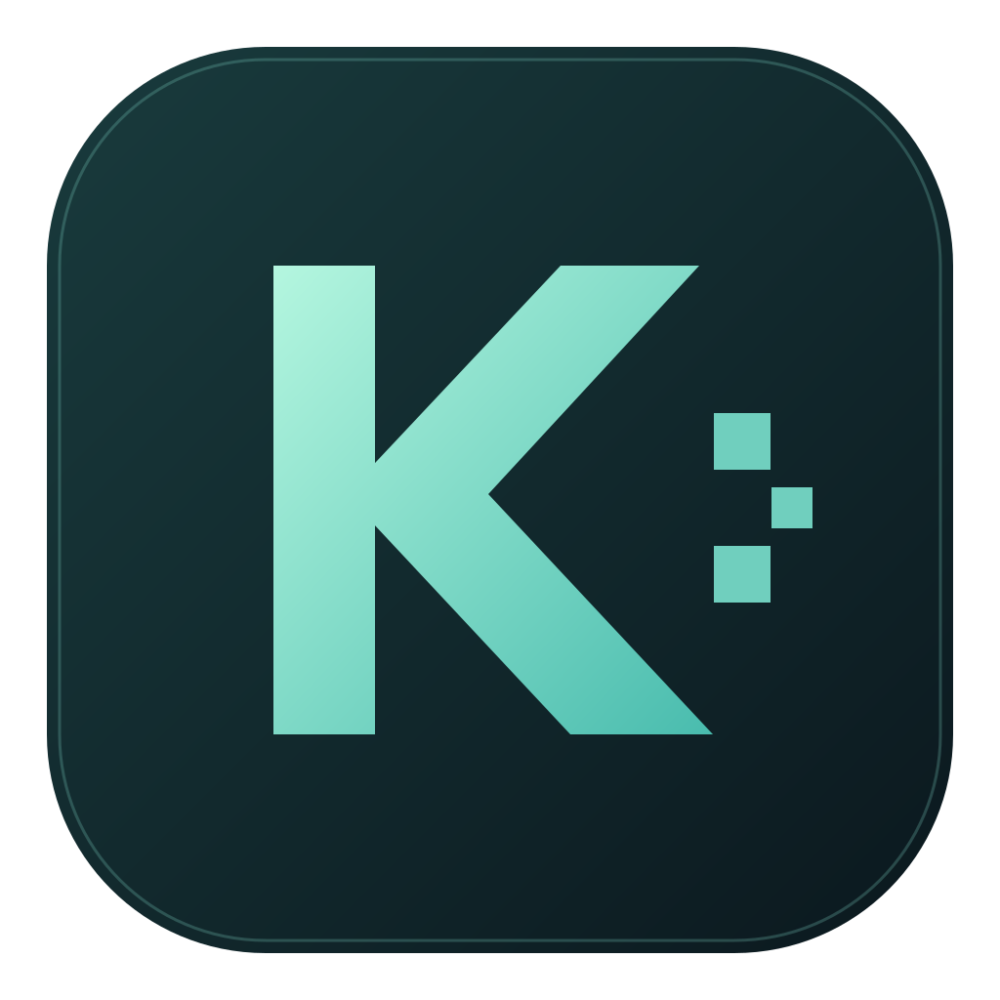

Explore the Kaspa universe.
在顶部输入网址，打开你的链上应用。
Open your favorite dApp from the address bar.
KASPAKRC20KCC20IGRAKASPLEX
开发中的钱包：代币支持与跨平台验证仍在进行中。
Token integrations and cross-platform testing are in progress.

Kaspa Orbit在顶部输入网址，打开你的链上应用。
Open your favorite dApp from the address bar.
开发中的钱包：代币支持与跨平台验证仍在进行中。
Token integrations and cross-platform testing are in progress.